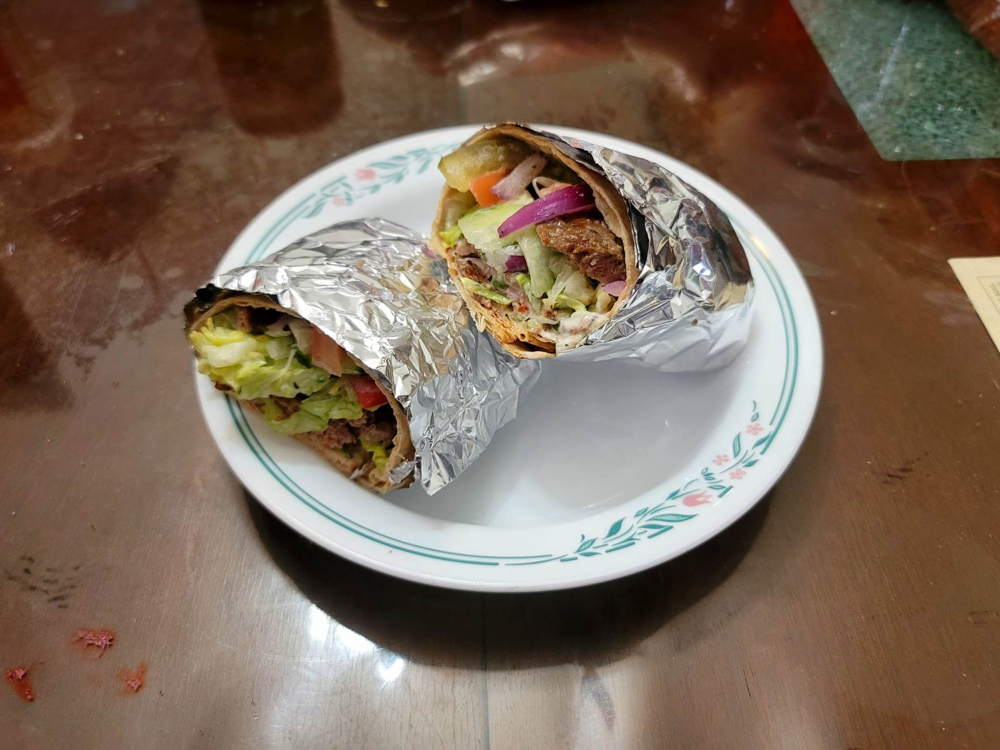

Döner Kebab

Ingredients:
Meat Mixture:
- 3 lb Ground lamb
- 2 Red onions, grated
- 1/4 cup Yogurt
- 2 tsp Aleppo pepper
- 2 tsp Kosher salt
- 2 tsp Cumin
- 1 tsp Black pepper
Other Ingredients:
- 10~ Lavash bread
- Iceberg lettuce, shredded
- Red onions, thin sliced
- Cucumbers, halved and thin sliced
- Tomatoes, thin sliced
- Optional: Cucumber pickles, cut into wedges
- Optional: Sumac
- Optional: Sumac onions
- Cacık
- Optional: Hot sauce
- Optional: French fries
Instructions:
- Combine the meat ingredients until homogenous. Wrap with plastic wrap and form into a log. Place into a fridge and let marinate overnight.
- Prepare the meat log onto a vertical rotisserie and place half an onion on the top. Cook on low for about 1 hour or until mostly cooked through. Then set to high and sear the outer edges. Make thin slices from the meat log to use in your döner kebab. Then let the outer edges sear again before repeating.
- Smear some cacık onto a piece of lavash. Then add the meat followed by the rest of the toppings. Roll into a burrito shape. Optionally grill the döner kebab to preference. Serve immediately.